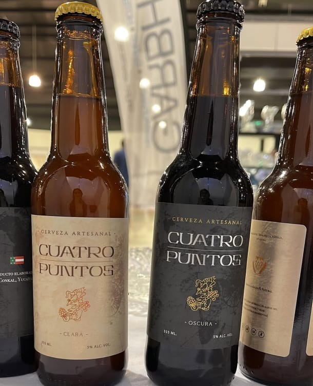
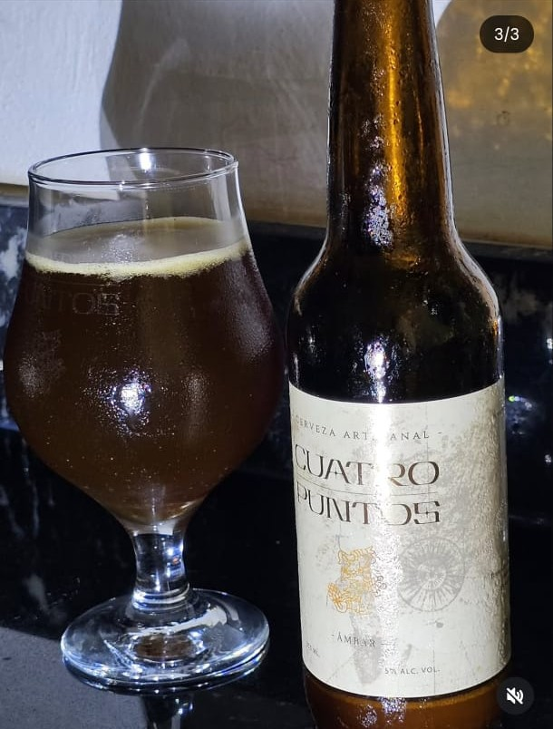
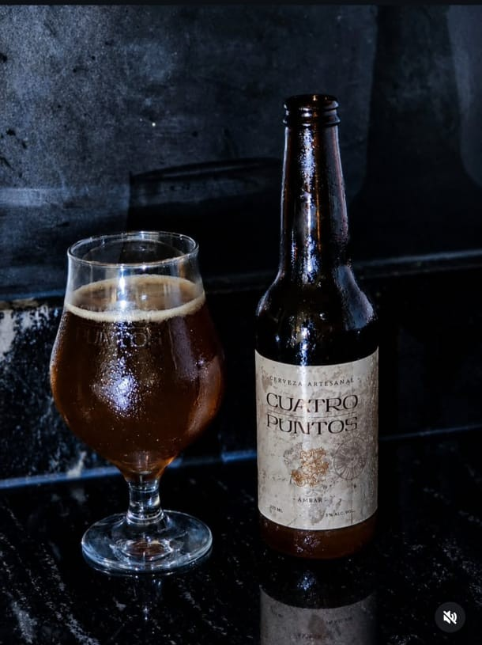
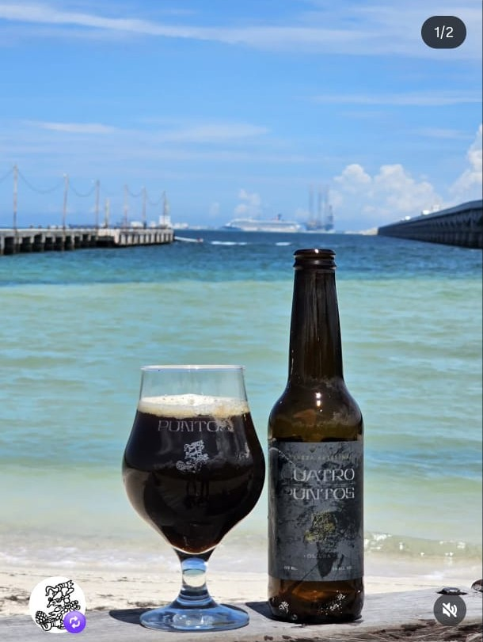
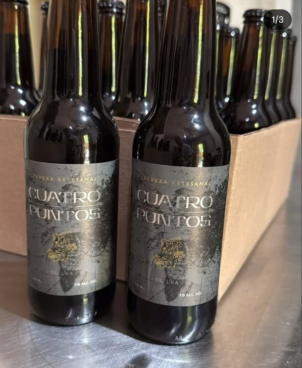
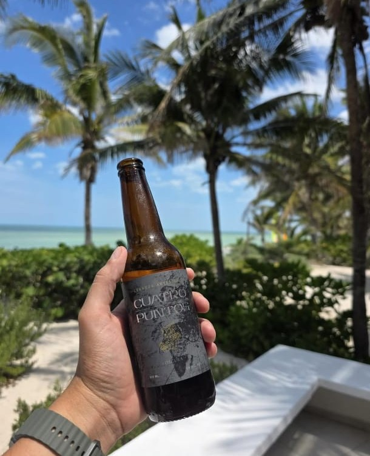
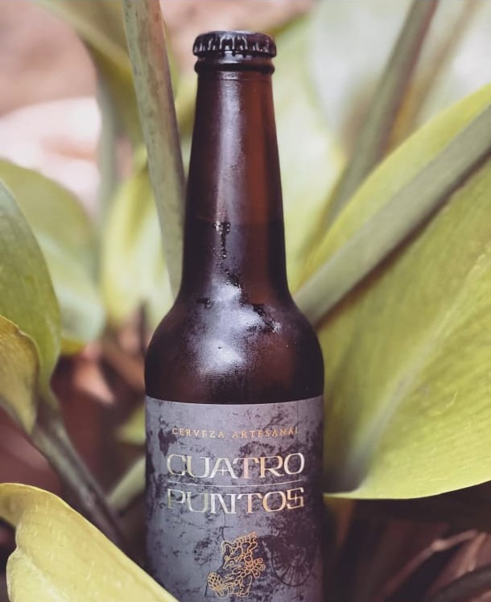
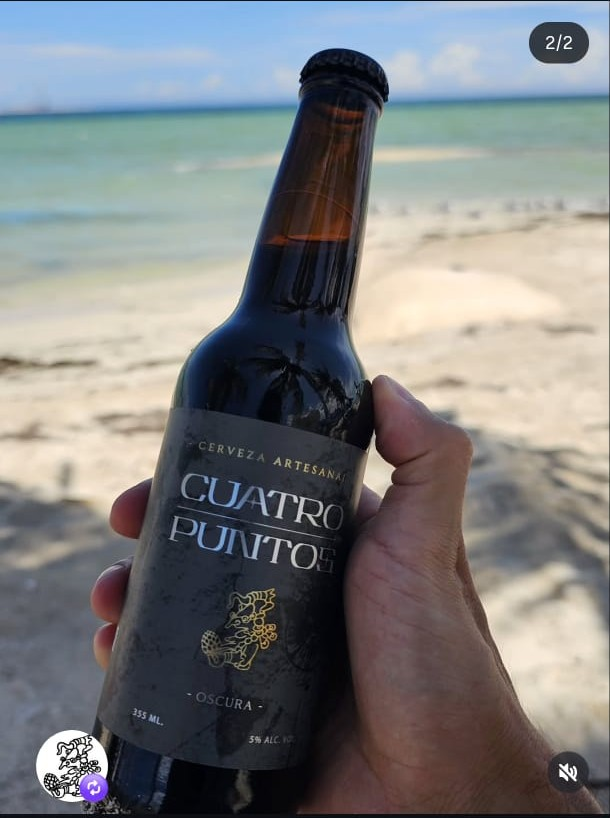

Clara
5% ALC. VOL.Ligera y refrescante, de cuerpo suave con notas maltosas y un final limpio. La puerta de entrada perfecta al mundo artesanal.

Cervecería Artesanal · Conkal, Yucatán
Cerveza artesanal elaborada con métodos tradicionales, tiempo y paciencia, en el corazón de Yucatán.
01 · Nuestra historia
Cuatro Puntos es una pequeña cervecería artesanal ubicada en la villa de Conkal, Yucatán. Elaboramos nuestra cerveza utilizando los métodos tradicionales, respetando los tiempos que cada receta necesita y cuidando cada lote como si fuera el primero.
No buscamos producir en masa: buscamos producir bien. Cada botella sale de nuestras manos después de semanas de maceración, cocción y fermentación controlada, honrando técnicas cerveceras transmitidas y perfeccionadas por generaciones.
El nombre "Cuatro Puntos" honra los cuatro pilares de este néctar: agua, malta, lúpulo y levadura — y los cuatro rumbos que, según la cosmovisión maya, dan equilibrio a la tierra yucateca que nos vio nacer.

02 · El detalle
Sin prisas. Sin atajos. Solo cuatro ingredientes y la paciencia de dejar que la fermentación haga su trabajo.
03 · En movimiento
04 · Nuestras cervezas

Ligera y refrescante, de cuerpo suave con notas maltosas y un final limpio. La puerta de entrada perfecta al mundo artesanal.

Cuerpo medio y color cobrizo, con notas a caramelo tostado equilibradas por un lúpulo sutil. Compleja sin dejar de ser fácil de beber.

Robusta y profunda, con notas a café tostado, chocolate amargo y un toque ahumado. Para quien busca carácter en cada trago.
05 · Proceso artesanal
La malta molida se mezcla con agua caliente para liberar los azúcares fermentables. De aquí nace el mosto, la base dulce de toda cerveza.
El mosto se hierve y se incorpora el lúpulo, que aporta amargor, aroma y actúa como conservador natural.
La levadura transforma los azúcares en alcohol y CO₂ durante días de reposo a temperatura controlada. Aquí nace el carácter de cada receta.
La cerveza reposa el tiempo necesario para redondear sabores y afinar su cuerpo, sin prisas ni procesos acelerados.
Cada botella se llena, corona y etiqueta a mano, lote por lote, cuidando que llegue a tu mesa en su mejor momento.
06 · Nuestra tierra
Conkal es un pueblo pequeño de tradición henequenera, a minutos de Mérida. Ahí, entre el calor y la calma yucateca, elaboramos cada lote de Cuatro Puntos con la misma calma con la que crece la tierra que nos rodea.



07 · Pide la tuya
Escríbenos por WhatsApp y te decimos qué tenemos disponible hoy.
Pedir por WhatsApp